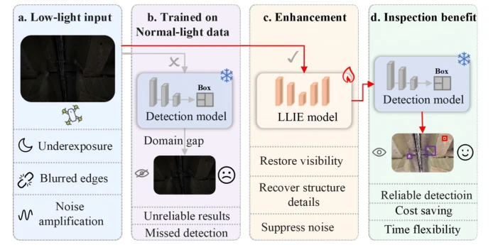
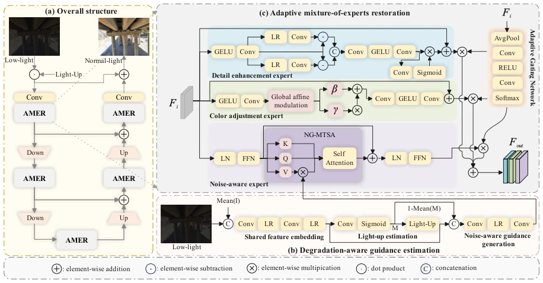
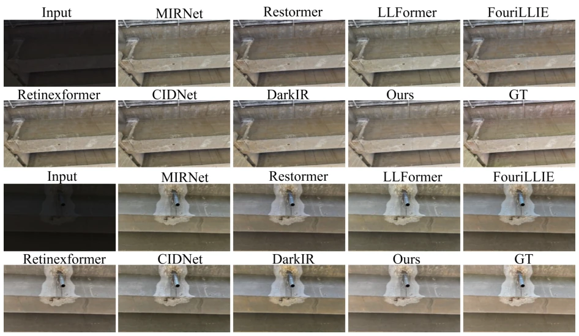
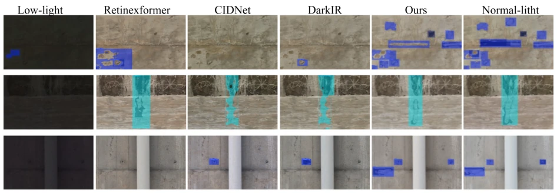
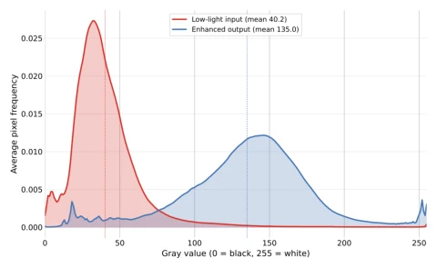
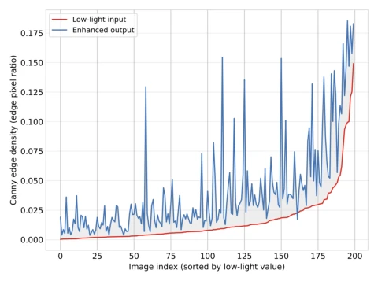
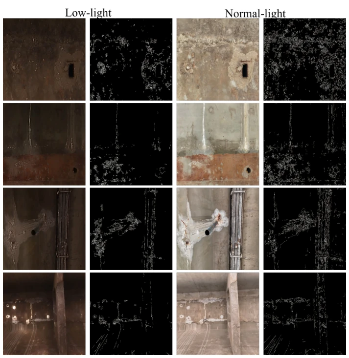
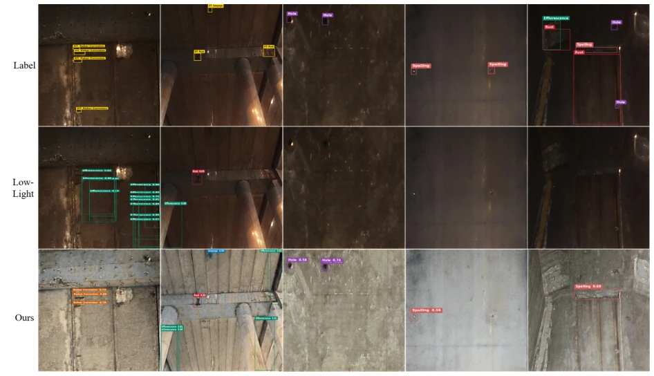
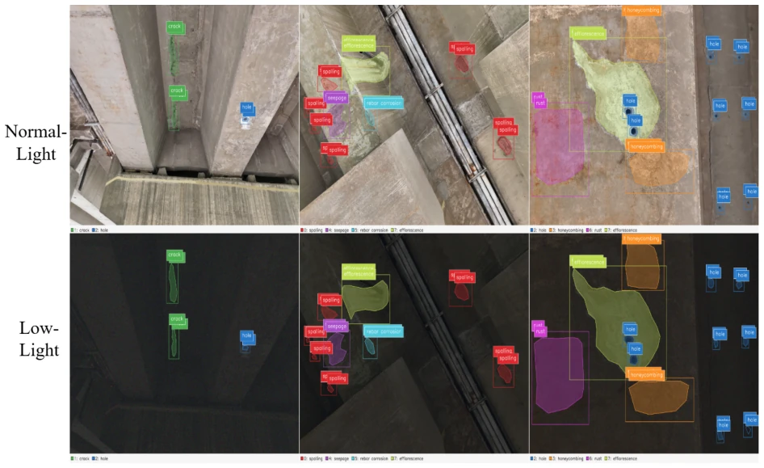

This paper provides a solution to the pain point of nighttime drone inspections. Under low illumination, bridge defects are difficult to identify; existing methods either game PSNR scores or rely on scarce paired data. The authors did not pursue an end-to-end large model, but instead developed a DaL-MoE enhancer, focusing on a 'task-oriented' approach. The highlights are ISP synthetic data + MoE architecture, assigning noise, color, and details to different experts. The downside is that synthetic data is after all not the real world; the sim-to-real generalization capability still depends on subsequent practical tests. However, compared to enhancements merely for brightness, this approach of enhancing for detection is indeed more pragmatic; at least YOLO's mAP increased significantly, saving some effort for engineering deployment.
In bridge inspections, low illumination leads to low contrast and high noise for defects such as cracks and spalling, seriously affecting the reliability of automated detection. Existing datasets such as SDNET2018 [11] and CODEBRIM [12] lack strictly paired low-light/normal-light images, preventing supervised recovery models. General low-light datasets such as LOL [15] lack civil engineering semantics. Existing enhancement methods [24-32] optimize pixel reconstruction, often destroying fine textures. Therefore, it is necessary to construct physically consistent synthetic data and design a task-oriented recovery model to solve the sim-to-real transfer problem, ensuring that enhanced images truly serve downstream detectors, rather than merely improving human visual perception.

Figure 1: Conceptual illustration of the motivation for low-light bridge damage detection.
方法Method
整体流程分为数据构建与模型设计。数据层面，利用 ISP-aware 合成管道，在 RAW 域模拟曝光衰减和噪声，生成与正常光图像空间对齐的配对数据，保留原始标注。模型层面，提出 DaL-MoE，包含 DAGE 和 AMER 模块。DAGE 模块从低光输入估计空间变化的光照图 M 和噪声感知特征 Fg，用于初步补偿和后续引导。AMER 模块采用 U 形骨干，集成三个专家：Noise-Aware Expert（结合 NG-MTSA 抑制噪声）、Color Adjustment Expert（全局仿射调制校正色偏）、Detail Enhancement Expert（恢复结构细节）。自适应门控网络根据输入动态融合专家输出。该模型作为 detector-agnostic 的前端，独立训练，不依赖下游检测器，可即插即用。
The overall process is divided into data construction and model design. At the data level, an ISP-aware synthetic pipeline is utilized to simulate exposure decay and noise in the RAW domain, generating paired data spatially aligned with normal-light images, retaining original annotations. At the model level, DaL-MoE is proposed, containing DAGE and AMER modules. The DAGE module estimates a spatially varying illumination map M and noise-aware feature Fg from low-light input, used for preliminary compensation and subsequent guidance. The AMER module adopts a U-shaped backbone, integrating three experts: Noise-Aware Expert (combining NG-MTSA to suppress noise), Color Adjustment Expert (global affine modulation to correct color bias), Detail Enhancement Expert (recovering structural details). An adaptive gating network dynamically fuses expert outputs based on input. This model serves as a detector-agnostic frontend, trained independently, not dependent on downstream detectors, and is plug-and-play.

Figure 2: Overview of the proposed DaL-MoE framework. (a) Overall architecture, consisting of a Degradation-Aware Guidance Estimation (DAGE) module and a U-shaped Adaptive Mixture-of-Experts Restoration (AMER) network. (b) Degradation-Aware Guidance Estimation module, which estimates a spatially varying illumination map and generates noise-aware guidance features from the low-light input. (c) Adaptive Mixture-of-Experts Restoration module, where noise- aware, color adjustment, and detail enhancement experts are dynamically integrated by an adaptive gating network for feature restoration.
On synthetic paired data, DaL-MoE achieves 23.12 dB PSNR and 0.8482 SSIM. Downstream YOLOv11m detection box mAP50 improved from 0.3097 to 0.4923, mask mAP50 from 0.2281 to 0.3529. On real low-light UAV images (without paired reference), sim-to-real evaluation shows improved defect visibility and more complete detection. Figures 4-9 display the enhancement effects and detection comparisons. Ablation studies verified the effectiveness of each module. Results indicate that task-oriented enhancement improves detection performance better than general enhancement, and does not require modifying the downstream detector architecture.

Figure 4: Visual comparison of low-light bridge image enhancement results. Input denotes the original low-light image, GT denotes the corresponding normal-light reference, and the remaining columns show the enhanced results produced by different methods.

Figure 5: Visual comparison of YOLOv11m bridge damage detection results under different input conditions. The same detector is applied to the low-light input, the enhanced images, and the corresponding normal-light reference.

Figure 6: Dataset-averaged grayscale intensity distributions of 200 real-world nighttime bridge images. DaL-MoE increases the mean intensity from 40.2 to 135.0.

Figure 7: Canny edge densities of 200 real-world nighttime bridge images, sorted by the density of the low-light inputs. The mean density increases from 1.55% to 4.07%.

Figure 8: Structural-cue comparison on representative real-world nighttime bridge images. From left to right: low-light input, input Canny edges, DaL-MoE output, and output Canny edges.

Figure 9: Qualitative YOLOv11m detection results on real-world nighttime bridge images. Label, Low-light, and Ours denote manual annotations, predictions on the original low-light images, and predictions after DaL-MoE enhancement, respectively. The detector and inference settings are fixed.
其他图片Other Figures

Figure 3: Visualization of defect annotations shared between paired normal-light and synthetic low-light images.